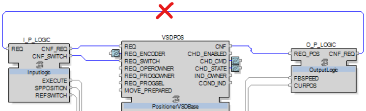

If the requested position is not reached, follow these steps:
-
Ensure that all the event inputs of the positioning block have been triggered at least once.
-
Right-click on the PositionerVSDBase application CAT, then select Add watch.
-
Right click on the REQ event, then select Trigger Event.
-
Right click on the REQ_ENCODER event, then select Trigger Event.
-
Right click on the REQ_SWITCH event, then select Trigger Event.
-
Right click on the REQ_OPEROWNER event, then select Trigger Event.
-
Right click on the REQ_PROGSEL event, then select Trigger Event.
-
Right click on the MOVE_PREPARED event, then select Trigger Event.
-
Execute a positioning request and check if the target is reached.
-
In the local HMI, open the faceplate of your positioner.
-
Set Owner to Operator.
-
Type the value of your Setpoint Position.
-
Type the value of your Positioning velocity.
-
Select the Method.
-
Click on Execute, then check if the target is reached.
Error halt troubleshooting
-
If the ATV dPAC leads to error halts in the Positioner Application, ensure that the output events of the PositionerVSDBase application CAT are not linked to the input events.

NOTE: The output events of PositionerVSDBase should not be linked back to the input Events, particularly the CNF output event.